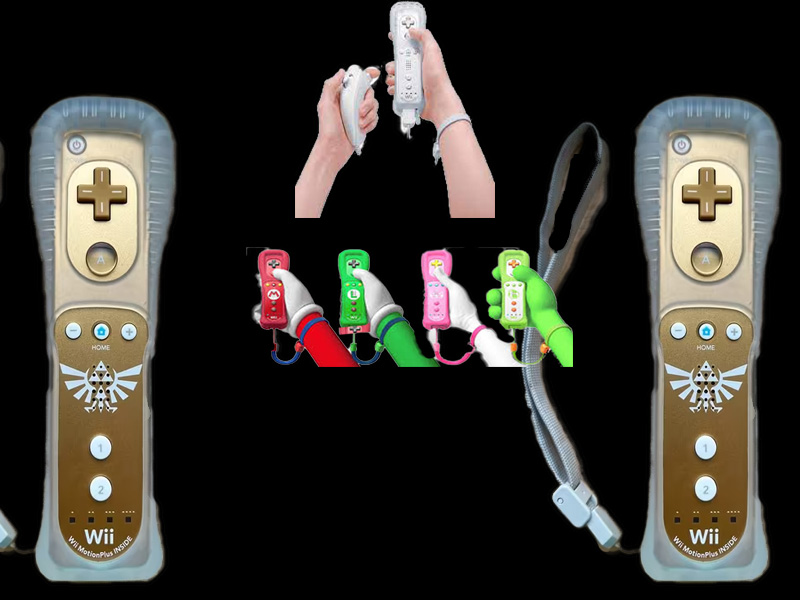
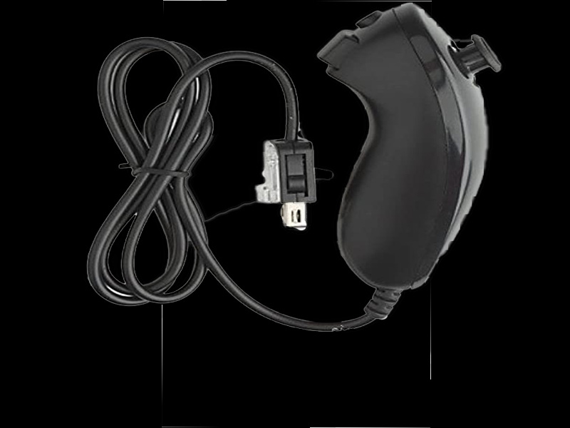

Wii Remote
Controles por movimientos con diferentes skins de la saga de Mario y el mando edicion especial de The Legend Of Zelda Skyward Sword.

Mando Clasico/Clasico Pro
Controles alambricos como alternativa para el Wii Remote.

Nunchuck
Los Nunchucks fueron el aditamento por exelecia del Wii Remote,nesesario para algunos juegos como TLOFZ Skyward Sword,Mario Galaxy,Metroid Prime 3,etc. .